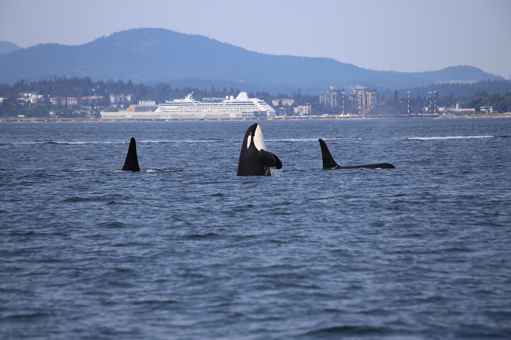

Orcas are highly intelligent, social mammals that have long been a part of marine park entertainment, performing shows for audiences. However, it's become increasingly clear that orcas do not thrive in captivity.
They have evolved to swim up to 40 miles a day, foraging for food and exercising. They dive 100 to 500 feet, several times a day, every day. Whether they're born in the wild or in captivity, all orcas born have the same innate drive to swim far and dive deep. Artificial enclosures in captivity cannon offer that kind of range to orcas, contributing to boredom and stress. Orcas have been seen to develop stereotypies, also known as zoochosis—repetitive patterns of activity that have no obvious function, which range from self-mutilation to rocking and swaying. Usually related to stress and inappropriate habitats, stereotypic behavior has been documented in orcas in scientific research since the late 1980s.
In the wild, orcas live in tight-knit family groups that share a sophisticated, unique culture that is passed down through generations, research has done. In captivity, orcas are kept in artificial social groups. Captive-born orcas are often transferred between facilities, breaking up social relationships. The stress of social disruption is compounded by the fact that orcas in captivity don’t have the ability to escape conflict with other orcas, or to engage in natural swimming behaviors in pools.
In 2013, the documentary film Blackfish laid bare the psychological toll of captivity, through the story of a wild-caught orca named Tilikum who had killed two trainers at SeaWorld Orlando. The film included testimony from former SeaWorld trainers and cetacean specialists, who argued that Tilikum’s stress directly led to his aggression towards humans.
 Back to Course Home Page